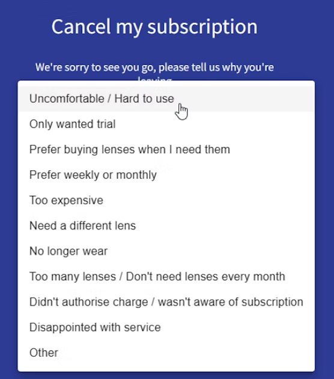
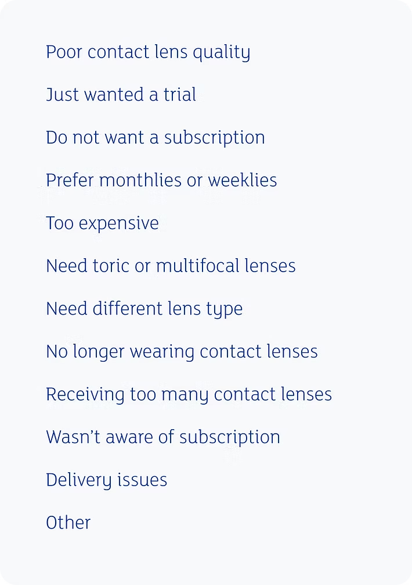
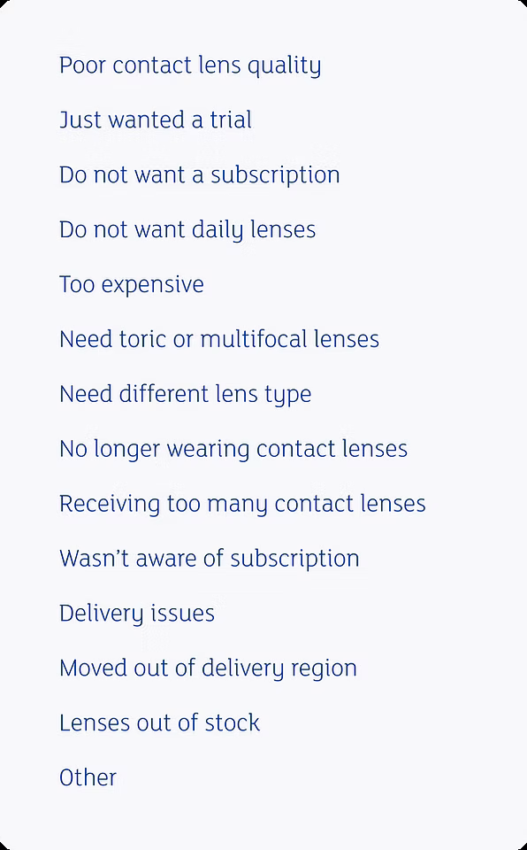

Waldo
Project overview
Waldo is a startup company based in London, England that specializes in subscription-based contact lenses. Waldo has started to expand into the US market and wants to understand why their customers cancel their subscriptions, so they can address any issues and improve the customer experience.
The cancellation survey is outdated and its answer options are unclear, which frustrates users. Without a better understanding of why users are canceling, Waldo cannot address the issues they are experiencing.
Revamp the cancellation survey to give users clearer options, make them feel heard, and gather optimized data to address the issues driving cancellations.
Understanding the user
Firstly, I assessed the current cancellation survey options. Many lacked clarity and had clunky-looking slashes that gave the options a technical feel instead of the empathetic, human touch that can help ease users who might already feel frustrated. I noted this and decided to do some user testing to see users' thoughts firsthand.

All interviewees were representative of Waldo's customer base and only included contact lens wearers and online subscribers of a product or service. I started by collecting pain points regarding online subscriptions and wearing contact lenses, then asked for feedback on Waldo's current cancellation reason list.
Interviewees included contact lens wearers and online subscribers of a product or service
15 questions about the pain points of contact lenses and online subscriptions
Open ended question about the existing cancellation survey options
Starting the design
I analyzed this feedback and reviewed it with the UX Designer. Since one of the pain points included wanting to expand on the 'other' option, I connected with the Data Lead and Lead Developer to gain insight on the feasibility of adding a free text box. Both agreed it would be a good addition, but it would have to be a separate project after the initial copy changes. Setting that aside, I began addressing the other pain points and adding clarity to the options overall.
Referencing the user feedback, I optimized the survey options and reviewed them with the UX Designer. Once we were both pleased with the new options, I set up another round of user testing.

Testing the design
Once again, all interviewees were representative of Waldo's customer base and only included contact lens wearers and online subscribers of a product or service. I asked each interviewee for feedback on the optimized cancellation survey options.
Interviewees were contact lens wearers and online subscribers representative of Waldo's customer base
Asked each interviewee for feedback on the optimized cancellation survey options
Refining the design
I analyzed this feedback and changed 'Prefer monthlies or weeklies' to 'Do not want daily lenses' to prevent confusion. For the pain point regarding the survey list being too long, I expressed my concerns to the UX Designer and Data Lead. If users found the survey list too long, it might provoke inaccurate responses. I offered the solution of combining similar options to shorten the list, but ultimately we decided to keep the detailed, longer list to gain more insights about customers' cancellation reasons.
After finalizing the list length, I collaborated with the CX Lead to ensure the survey options aligned with the CX data reports from customers who canceled via phone. All survey options lined up perfectly with the CX data, apart from two missing options: 'Moved out of delivery region' and 'Lenses out of stock'. The CX Lead also suggested adding a follow-up question section, but after speaking with the Lead Developer, we agreed to add this to a future project.
After adding the two additional options from the CX data reports, I presented the new survey list to the UX Designer, Data Lead, and CX Lead. Everyone was pleased with the newly optimized options, and we set in motion implementing the changes to the cancellation flow.

Finalizing the design

Next steps
- Begin putting together a project plan for a secondary project which will include an 'Other' input box and follow-up questions after the main cancellation question
- Record the survey data to gain insights and see if any additional changes are needed
- Review the data to see how we can improve the user experience with Waldo
- Add win-back text within the cancellation flow for appropriate options
Conclusion
Canceling a subscription is often a frustrating experience, and this project gave me the challenge of creating a great customer experience within that. It reinforced the importance of compromise, taking time to understand different perspectives, and recognizing that sometimes what is best for the user cannot be accomplished immediately. However, by working together to put a clear plan in place and using data-driven design, the users' frustrations served as the driving force for improving the customer experience — proving that negative feedback and the loss of a customer can be a catalyst for change and the key to a new and improved user experience.